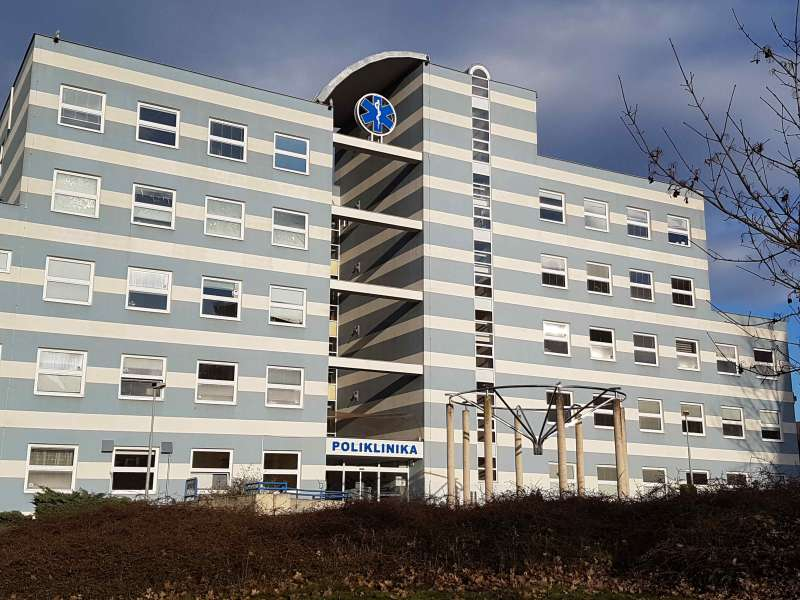

MUDr. Marcela Šašková
Praktický lékař pro dospělé
Poliklinika Černý Most – Parník
Aktuality
Očkování proti žloutence typu A
V naší ordinaci nabízíme očkování proti žloutence typu A. Vakcíny máme k dispozici.
Upozornění
Dovolujeme si vás upozornit, že klient, který se nedostaví na objednaný termín bez včasné omluvy (minimálně 48 hodin předem), ztratí možnost vzdálené komunikace s naší ordinací, včetně vystavování e-receptů. Veškeré záležitosti pak bude muset vyřizovat pouze osobně.
Mnoho klientů se bohužel na objednaný termín nedostaví a neomluví, což blokuje kapacitu ordinace a znemožňuje jiným klientům získat dřívější termín. Věříme, že toto opatření přispěje ke zlepšení dostupnosti naší péče pro všechny. Děkujeme za pochopení.
Objednaní pacienti
Ordinační hodiny pro objednané pacienty jsou vyhrazeny pouze objednaným pacientům. Prosíme o respektování tohoto pravidla.
Služby
Naše ordinace poskytuje komplexní zdravotní péči pro dospělé. Mezi naše služby patří:
- Ambulantní péče, léčba akutních a chronických onemocnění
- Preventivní péče, preventivní prohlídky
- Poradenská činnost
- Možnost objednání na konkrétní čas
- Péče o pacienty s diabetem
- Očkování, pravidelná i do zahraničí
- EKG, CRP, INR, pulsní oxymetr, Streptest A, měření kotníkových tlaků
- Vyšetření stolice na skryté krvácení, prevence karcinomu střeva
- Analýza moči
- Vyšetření na potravinářský, řidičský, zbrojní průkaz
- Předoperační vyšetření
Ceník úkonů nehrazených pojišťovnami
(platný od 29. 12. 2025)
| Úkon | Cena (Kč) |
|---|---|
| Vyšetření pro: | |
| Potvrzení pro řidičský průkaz | 900 |
| Potvrzení pro prodloužení řidičského průkazu po 65 roce věku | 300 |
| Potvrzení pro vydání/prodloužení zbrojního průkazu | 1000 |
| Potvrzení pro nástup do zaměstnání (vstupní či periodická prohlídka) | 800 |
| Potvrzení o způsobilosti ke studiu, potvrzení pro letní tábory | 300 |
| Potvrzení o zdravotním stavu pro jiné účely (soudy, pracovní úřad, sportovní akce, apod.) | 600 |
| Potvrzení pro zdravotní průkaz (potravinářský) | 400 |
| Předoperační vyšetření před výkony nehrazených z veřejného pojištění (plastická operace apod.) | 1400 + přímé náklady (laboratoř apod.) |
| Ostatní úkony: | |
| Žádost pro umístění do domova seniorů | 500 |
| Aplikace očkovací látky, která nepatří mezi povinná očkování | 250 |
| Aplikace léčiva do svalu či podkoží | 250 |
| Výpis ze zdravotní dokumentace pro pracovně lékařskou prohlídku | 500 |
| Výpis pro pojišťovnu | 1 000 |
| Vyplnění lázeňského návrhu (příspěvkového) | 500 – 1 000 (dle náročnosti) |
| Administrativní výkon jiný | 400 |
| Vystavení duplikátu žádanek, průkazů, posudků | 100 |
| Příplatek k úkonu za pacientem požadované expresní vyřízení (do 24 hodin v pracovní dny) | 200 |
| Výpočet bolestného pro potřeby pracovního úrazu | 600 |
| Výpočet bolestného pro potřeby komerčního pojištění | dle dohody |
| Vyšetření CRP metodou POCT na vlastní žádost | 300 |
| Vyšetření Streptest na vlastní žádost | 300 |
| TOKS (v případech, kdy nehradí pojišťovna) | 300 |
| Stanovení hladiny cukru glukometrem na vlastní žádost | 250 |
| Samoplátci (nepojištění pacienti): | |
| Vyšetření nepojištěného pacienta kontrolní | 500 + přímé náklady |
| EKG u nepojištěného pacienta | 400 |
| Kopie: | |
| Kopie (1 strana) | 5 |
Ordinační hodiny
| Pondělí | 7:30 – 10:30 (ambulance) |
10:30 – 12:30 (jen pro objednané) |
13:00 – 18:00 (jen pro objednané) |
|---|---|---|---|
| Úterý | 7:30 – 10:30 (ambulance) |
10:30 – 13:00 (jen pro objednané) |
|
| Středa | 7:30 – 10:30 (ambulance) |
10:30 – 12:30 (jen pro objednané) |
13:00 – 15:00 (jen pro objednané) |
| Čtvrtek | 7:30 – 10:30 (ambulance) |
10:30 – 13:00 (jen pro objednané) |
|
| Pátek | 9:00 – 11:00 (jen pro objednané) |
Ordinační hodiny pro objednané pacienty jsou vyhrazeny striktně pouze objednaným pacientům.
Kontakty

Zdravotní sestra: Šárka Havelková
2. patro
Generála Janouška 902/17
198 00 Praha 9